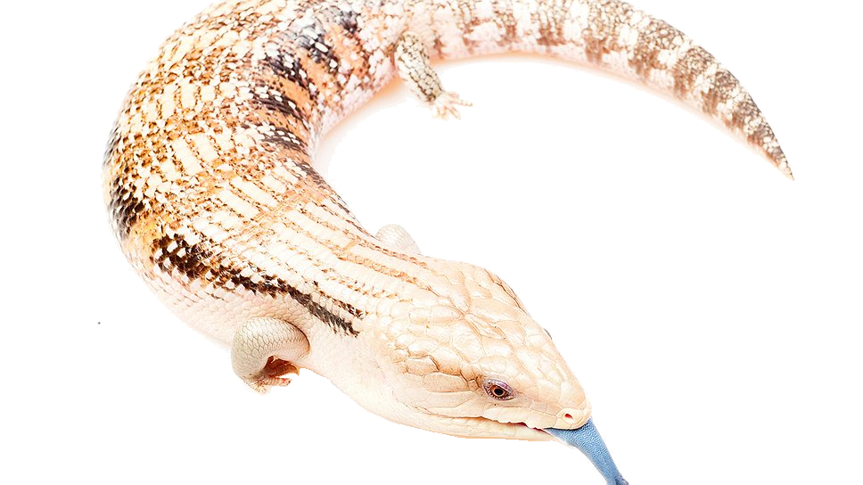

Крупная ящерица.
Общая длина некоторых экземпляров может достигать 60 см и более, но обычно не превышает 45—50 см.
Туловище длинное, широкое и уплощенное, покрытое крупной гладкой чешуей.
Голова большая и массивная, с мощными челюстями. Конечности короткие, пятипалые.
Хвост довольно короткий и толстый, его длина составляет около 60 % длины тела от кончика морды до клоаки.
Окраска очень изменчива и отличается у разных подвидов.
В природе синеязыкий сцинк питается в основном растительной пищей, но может охотиться и на мелких животных.
